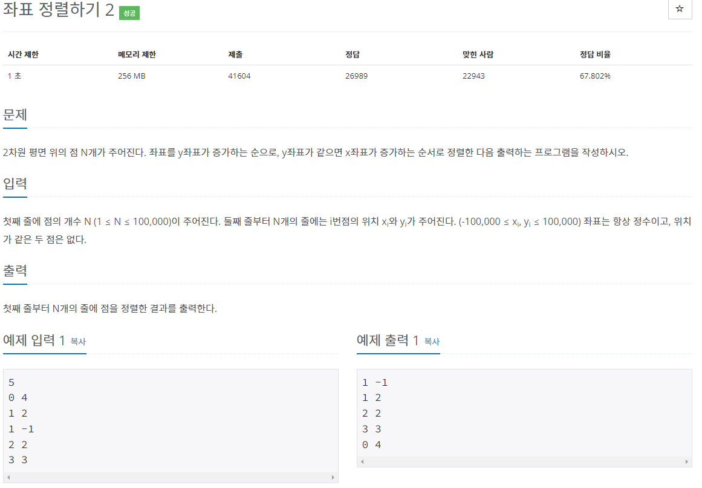

#INFO
난이도 : SILVER5
문제 유형 : 정렬
출처 : 11651번: 좌표 정렬하기 2 (acmicpc.net)

#SOLVE
BOJ 11650 좌표 정렬하기 문제랑 거의 같은 문제이다. sort 함수 내부에서 pair는 first(x좌표)를 기준으로 오름차 정렬 되기 때문에 3번째 인자로 second(y좌표)를 기준으로 오름차 정렬하고, second(y좌표)가 같을 경우 first(x좌표)를 기준으로 오름차 정렬하는 bool형 compare 함수를 정의해 주면 된다.
#CODE
#include <bits/stdc++.h>
using namespace std;
bool compare(const pair<int, int>& p1, const pair<int, int>& p2){
if(p1.second == p2.second) // y좌표가 같으면
return p1.first < p2.first; // x좌표 오름차 정렬
return p1.second < p2.second; // y좌표가 다르면 y좌표 오름차 정렬
}
int main(){
ios::sync_with_stdio(false);
cin.tie(NULL);
cout.tie(NULL);
int n;
cin >> n;
vector<pair<int, int>> xy;
xy.resize(n);
for(int i = 0; i < n; ++i){
cin >> xy[i].first >> xy[i].second;
}
sort(xy.begin(), xy.end(), compare);
for(int i = 0; i < n; ++i){
cout << xy[i].first << " " << xy[i].second << '\n';
}
return 0;
}